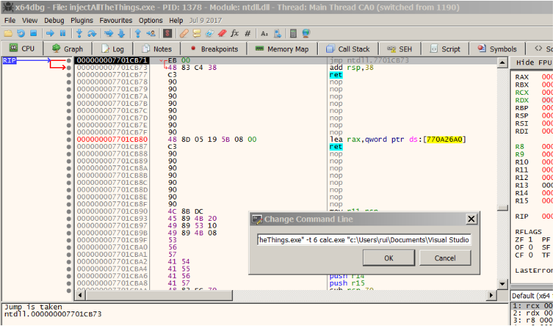

SetThreadContext()
This is actually a very cool method. A specially crafted code is injected into the target/remote process by allocating a chunk of memory in the target/remote process. This code is responsible for loading the DLL.
Here’s the code for 32 bits. See child page.
For 64 bits I couldn’t actually find any assembly working code and I kinda wrote my own. See child page.
Before we inject this code into the target process some placeholders need to be filled/patched with:
- Return address (address where the thread should resume once the code stub has finished execution)
- The DLL path name
- Address of LoadLibrary()
And that’s when the game of hijacking, suspending, injecting, and resuming a thread comes into play.
We need first to attach to the target/remote process, of course, and allocate memory into the target/remote process. Note that we need to allocate memory with read and write privileges to hold the DLL path name and to hold our assembly code that will load the DLL.
LPVOID lpDllAddr = VirtualAllocEx(hProcess, NULL, dwSize, MEM_COMMIT, PAGE_EXECUTE_READWRITE);
stub = VirtualAllocEx(hProcess, NULL, stubLen, MEM_COMMIT, PAGE_EXECUTE_READWRITE);
Next, we need to get the context of one of the threads running on the target/remote process (the one that is going to be injected with our assembly code).
To find the thread, we use the function ‘getThreadID()’, you can find it on the file ‘auxiliary.cpp’.
Once we have our thread id, we need to set the thread context.
hThread = OpenThread((THREAD_GET_CONTEXT | THREAD_SET_CONTEXT | THREAD_SUSPEND_RESUME), false, threadID);
Next, we need to suspend the thread to capture its context. The context of a thread is the state of its registers. We are particularly interested in EIP/RIP (call it IP - instruction pointer, if you want).
Since the thread is suspended, we can change the EIP/RIP value and force it to continue its execution in a different path (our code cave).
ctx.ContextFlags = CONTEXT_CONTROL;
GetThreadContext(hThread, &ctx);
DWORD64 oldIP = ctx.Rip;
ctx.Rip = (DWORD64)stub;
ctx.ContextFlags = CONTEXT_CONTROL;
WriteProcessMemory(hProcess, (void *)stub, &sc, stubLen, NULL); // write code cave
SetThreadContext(hThread, &ctx);
ResumeThread(hThread);
So, we suspend the thread, we capture the context, and from there we extract the EIP/RIP. This is saved to resume the execution when our injected code finishes. The new EIP/RIP is set as our injected code location.
We then patch all the placeholders with the return address, the DLL path name address, and the ‘LoadLibrary()’ address.
Once the thread starts executing, our DLL will be loaded and once it finishes it will return back to the point it was suspended at and resume its execution there.
If you feel like debugging this technique as a learning exercise, here’s how to do it. Launch the application you want to inject into, let’s say ‘notepad.exe’. Run ‘injectAllTheThings_64.exe’ with ‘x64dbg’ as shown below.

That is, using the following command line (adapt to your environment):
"C:\Users\rui\Documents\Visual Studio 2013\Projects\injectAllTheThings\bin\injectAllTheThings_64.exe" -t 6 notepad.exe "c:\Users\rui\Documents\Visual Studio 2013\Projects\injectAllTheThings\bin\dllmain_64.dll"
Set a breakpoint on the call to ‘WriteProcessMemory()’ as shown below.

Let it run and when the breakpoint is hit take note of the memory address at the register RDX. If you are asking yourself why RDX is time to read about the calling convention used in x64. Have fun and come back once you finish.

Step over (F8) the call to ‘WriteProcessMemory()’, launch another instance of x64dbg and attach to ‘notepad.exe’. Go to the address copied before (the one at RDX) by pressing ‘Ctrl + g’ and you will see our code cave assembly as shown below.

Cool, huh!? Now set a breakpoint at the beginning of this shellcode. Go to the ‘injectAllTheThings’ debugged process and let it run. As you can see below our breakpoint is hit and we can now step over the code for fun and enjoy this piece of code working.

Once we call the ‘LoadLibrary()’ function, we get our DLL loaded

This is so beautiful…
Our shellcode will return to the previously saved RIP and ‘notepad.exe’ will resume execution.
For the complete source code see ‘t_suspendInjectResume.cpp’.